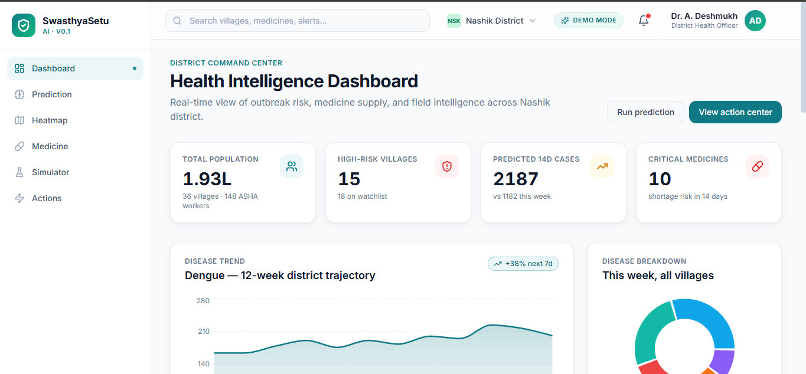
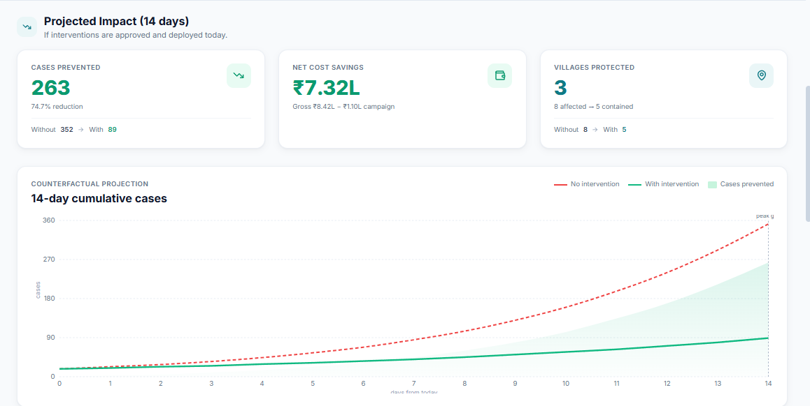
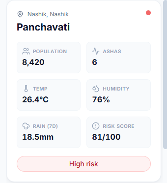

Project 01 // AI / Rural Healthcare
01
SwasthyaSetu AI
Outbreak risk prediction for rural healthcare
SwasthyaSetu AI is an AI-powered early warning platform built for India's rural healthcare system. It targets the three tiers of care delivery — ASHA workers, PHC administrators and District Health Officers — and gives each tier the intelligence they need to act before an outbreak takes hold.
Open live deployment → View repository →
36
Villages modelled
6
Primary health centres
15
NLEM-aligned medicines
286
Cases prevented, modelled

The problem
Rural areas often face delays in detecting disease outbreaks and shortages of essential medicines, due to poor healthcare monitoring and reporting systems. This makes it difficult to take timely action and provide the right resources where they are needed.
What I built
A mobile-responsive district command centre for Nashik district — modelling outbreak risk for 5 priority diseases across 36 villages and 6 PHCs, with an explainable weighted risk model, a 14-day shortage forecaster for 15 NLEM-aligned essential medicines, and a counterfactual simulator of three compounding interventions projecting up to 286 cases prevented and ₹7.45L saved.
How the model works
- The risk score combines weather suitability, rainfall and case-history momentum — every score ships with a causal factor breakdown and a human-readable rationale.
- Risk thresholds are explicit: 70 and above is high, 40 and above is medium, otherwise low.
- Shortage forecasting propagates an outbreak surge into medicine demand — baseline days of stock against surge days, with restock recommendations.
- The simulator compounds three interventions — mosquito control (35%), awareness (25%) and emergency medicine (20%) — into a 61% growth reduction.
Six routes, one district
- Dashboard — KPIs, a 12-week disease trend, top-risk villages, recent alerts and medicine stock.
- Prediction — sliders for temperature, humidity, rainfall and prior cases, with a live-updating risk score.
- Heatmap — a real OpenStreetMap of Nashik with 36 village markers, colour-coded by risk.
- Medicine — 15 NLEM medicines, baseline versus surge days-of-stock, filterable, with restocking recommendations.
- Simulator — 14-day trajectories with and without interventions; cases prevented, cost savings and villages protected.
- Actions — resource allocation, preventive actions, field operations and ASHA directives.
Honest scope
No auth, no payments, no voice and no real backend — all data is in-memory and deterministic (seeded RNG), so the demo is consistent across reloads.
Operational scope: Nashik district, Maharashtra — 36 villages, 6 PHCs, roughly 1.93 lakh population, 5 priority diseases and 15 NLEM-aligned essential medicines.
Every number in the product comes from real math, not random. The architecture is multi-tenant by design, geo-indexed from day one.
More from the build


- React 18
- TypeScript
- Vite 5
- Tailwind CSS
- React Router
- Leaflet
- Recharts